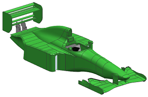

Review the assembly structure
-
Use the Assembly Navigator to examine the assembly structure.
There are four main subassemblies used in this assembly file.
 asm2_85_demo_car_assy
asm2_85_demo_car_assy
asm2_85_bodywork
asm2_85_rsp_001-motion
asm2_85_fsp_001-motion
asm2_85_eng_001-motion
-
Select the asm2_85_bodywork node check box.
asm2_85_demo_car_assy
 asm2_85_bodywork
asm2_85_bodywork
asm2_85_rsp_001-motion
asm2_85_fsp_001-motion
asm2_85_eng_001-motion
The asm2_85_bodywork subassembly is loaded.
